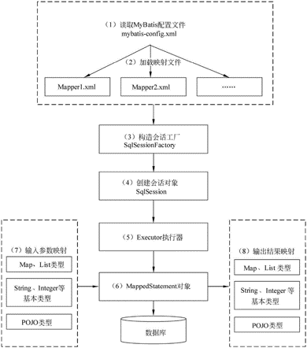
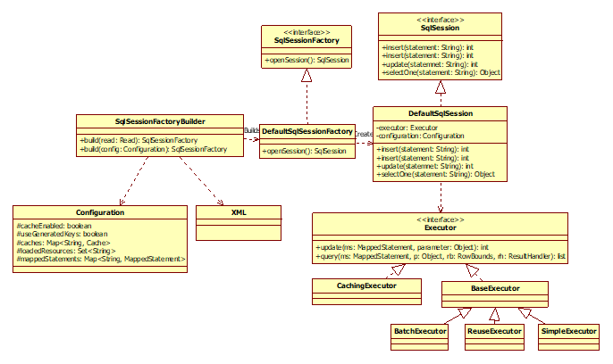

MyBatis⯐
简介
MyBatis是一种Java持久化框架，它可以将SQL语句和Java对象之间的映射关系定义在XML文件或注解中，从而简化了数据库操作的编写和维护。MyBatis提供了丰富的功能，包括动态SQL、缓存、批处理等，可以帮助开发者更加高效地进行数据库操作。
使用方式
-
独立使用
- 配置繁琐
-
与Spring或Spring Boot结合
-
命名约定
-
注解
-
生命周期

核心接口和类的结构

Spring Boot集成
安装
在pom.xml添加以下依赖：
开发流程
mybatis-spring-boot-starter是一个用于在Spring Boot应用中集成MyBatis的starter，使用它可以方便地进行MyBatis的配置和使用。下面是mybatis-spring-boot-starter的开发流程：
在pom.xml文件中添加MyBatis和MyBatis-Spring的依赖。
在application.properties文件中配置数据源信息。
在应用程序入口增加扫描配置
按Java Bean规范创Student类。
源代码
1 2 3 4 5 6 7 8 9 10 11 12 13 14 15 16 17 18 19 20 21 22 23 24 25 26 27 28 29 30 31 32 33 34 35 36 37 38 39 40 41 42 43 44 45 46 47 48 49 50 51 52 53 54 55 56 57 58 59 60 61 62 63 64 65 66 67 68 69 70 71 72 73 74 75 76 77 78 79 80 81 82 83 84 85 86 87 88 89 90 91 92 93 94 95 96 97 98 99 100 101 102 103 104 105 106 107 108 109 110 111 112 113 114 115 116 117 118 119 120 121 122 123 124 125 126 127 128 129 130 131 132 133 134 135 136 137 138 139 140 141 142 143 144 145 146 147 148 149 150 151 152 153 154 155 | |
在resources目录下创建一个Mapper XML文件，编写SQL语句。
配置
Spring Boot数据源配置
以下是Spring Boot中常用的数据库配置参数及其描述和默认值：
| 参数名 | 描述 | 默认值 |
|---|---|---|
| spring.datasource.url | 数据库连接URL | 无 |
| spring.datasource.username | 数据库用户名 | 无 |
| spring.datasource.password | 数据库密码 | 无 |
| spring.datasource.driver-class-name | 数据库驱动类名 | 无 |
| spring.datasource.type | 数据库连接池类型 | 无 |
| spring.datasource.hikari.* | HikariCP连接池配置 | 无 |
| spring.datasource.tomcat.* | Tomcat连接池配置 | 无 |
| spring.datasource.dbcp2.* | DBCP2连接池配置 | 无 |
| spring.datasource.jndi-name | JNDI数据源名称 | 无 |
其中，spring.datasource.url、spring.datasource.username、spring.datasource.password和spring.datasource.driver-class-name是必须配置的参数，其他参数根据需要进行配置。具体的配置方式可以参考Spring Boot官方文档。
Mybatis配置
mybatis-spring-boot-starter的配置参数如下：
| 参数名 | 描述 | 默认值 |
|---|---|---|
| mybatis.config-location | MyBatis配置文件的位置 | classpath:mybatis-config.xml |
| mybatis.mapper-locations | Mapper映射文件的位置，可以使用通配符 | classpath:mapper/*/.xml |
| mybatis.type-aliases-package | 实体类所在的包名，可以使用通配符 | (无) |
| mybatis.type-handlers-package | TypeHandler所在的包名，可以使用通配符 | (无) |
| mybatis.configuration.properties | MyBatis配置属性 | (无) |
| mybatis.configuration.map-underscore-to-camel-case | 是否开启驼峰命名转换 | false |
| mybatis.configuration.cache-enabled | 是否开启缓存 | true |
| mybatis.configuration.lazy-loading-enabled | 是否开启延迟加载 | false |
| mybatis.configuration.default-statement-timeout | SQL执行超时时间，单位为秒 | (无) |
| mybatis.configuration.default-fetch-size | 每次查询返回的记录数 | (无) |
| mybatis.configuration.default-statement-type | SQL执行方式，可选值为STATEMENT、PREPARED、CALLABLE | PREPARED |
| mybatis.configuration.default-executor-type | 执行器类型，可选值为SIMPLE、REUSE、BATCH | SIMPLE |
| mybatis.configuration.jdbc-type-for-null | 当Java类型为null时，对应的JDBC类型 | OTHER |
| mybatis.configuration.log-impl | 日志实现类 | org.apache.ibatis.logging.stdout.StdOutImpl |
SQL映射文件
SQL 映射文件结构
| 元素 | 功能 |
|---|---|
| cache | 配置给定命名空间的缓存。 |
| cache-ref | 从其他命名空间引用缓存配置。 |
| resultMap | 最复杂，也是最有力量的元素，用来描述如何从数据库结果集中来加载对象。 |
| sql | 可以重用的 SQL 块，也可以被其他语句引用。 |
| insert | 映射插入语句 |
| update | 映射更新语句 |
| delete | 映射删除语句 |
| select – 映射查询语句 |
Select
Insert
主键策略
如果使用的数据库支持自动生成主键，那么就可以设置 useGeneratedKeys= ” true ” ，然后 把keyProperty 设成对应的列。
Update
Delete
动态SQL
MyBatis 的一个强大的特性之一通常是它的动态 SQL 能力
-
if
-
choose(when,otherwise)
-
trim(where,set)
-
foreach
sql
这个元素用来定义一个可以复用的 SQL 语句段，供其它语句调用。比如：
if
<select id="findActiveBlogLike" parameterType="Blog" resultType="Blog">
SELECT * FROM BLOG WHERE state = "ACTIVE"
<if test="title != null">
AND title like #{title}
</if>
<if test="author != null and author.name != null">
AND title like #{author.name}
</if>
</select>